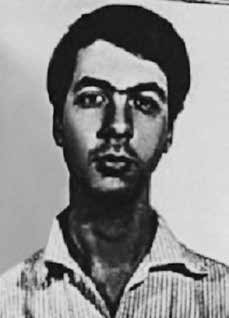

Ary
Abreu
Lima
da Rosa
CIRCUNSTÂNCIAS DA MORTE
Ary Abreu Lima da Rosa morreu no dia 28 de outubro de 1970, em Canoas (RS). Foi preso em 1969, com seu companheiro Paulo Walter Radke, militante do Partido Operário Comunista (POC), por distribuírem panfletos aos candidatos ao vestibular na frente da Faculdade de Farmácia da UFRGS.
O relatório do Departamento de Ordem Política e Social (DOPS) aponta que ambos os estudantes, ao serem detidos, “tinham em seu poder grande número de panfletos que foram apreendidos (…) que criticam a política educacional do Governo Federal de maneira áspera e incita os vestibulandos a se unirem com os estudantes e lutar contra o inimigo comum”. Os panfletos apresentam uma crítica à política educacional de nível superior, mostrando que universidades foram criadas “sem qualquer levantamento preliminar das necessidades e possibilidades materiais e humanas”.
No material divulgado, os estudantes defendiam o Movimento pela Universidade Crítica (MUC), denunciando a falta de vagas, criticando o ensino universitário, o regime ditatorial-militar, defendendo a legalização da União Nacional dos Estudantes (UNE) e conclamando os estudantes a participar das eleições para o Diretório Central (DCE). Em virtude das panfletagens, Ary e Paulo foram enquadrados no artigo 38-II da Lei de Segurança Nacional em 28 de março de 1969. O Decreto 314/1967 punia por atos, palavras e opiniões consideradas contrárias ao regime militar. Os estudantes foram soltos algum tempo depois, mas o processo teve continuidade. Por esse motivo, decidiram passar à clandestinidade e mudar-se para São Paulo.
Não tendo se adaptado à vida clandestina em São Paulo, Ary voltou a Porto Alegre. No dia 1o de setembro de 1969 Ary Abreu e Paulo Radke foram condenados a seis meses de reclusão por crime “contra a segurança nacional” pelos juízes Rubens Medeiros e Raul Germano da Silva e pelos capitães Arnaldo de Souza Leão, Aldo Luís Ramos e Luís Ferreira dos Santos Filho. Por opção de seu pai, político influente da Aliança Renovadora Nacional (ARENA) e crítico à participação do filho no movimento estudantil, Ary foi internado numa clínica psiquiátrica.
Permaneceu no Sanatório São José do dia 2 de setembro de 1969 ao dia 1o de setembro de 1970, submetido a tratamento farmacológico e psicoterapia de apoio. De acordo com diagnóstico do paciente no Sanatório, assinado pelo médico José Godoy Gavioli na data de saída da instituição, Ary teria apresentado “reação esquizofreniforme, com ideias de conteúdo paranoide. Sentia-se desadaptado no ambiente sociofamiliar com ideias de referência e de que não era benquisto pelos que o cercavam. Em junho de 1968, abandonou os estudos na faculdade como decorrência de seu baixo rendimento intelectual, consequência do estado emocional de então. Passou a apresentar ideias reformistas, principalmente de natureza materialista, identificando-se com princípios esquerdistas, socialismo ou mesmo, comunismo. Deixou crescer barba e cabelo como um ‘protesto ao mundo capitalista’. (…) Tendo em vista ter realmente se envolvido em política estudantil de esquerda, onde procurava, dentro de sua psicopatologia esquizoparanóide, pôr em prática aspectos quase delirantes das concepções que morbidamente defende, sugerimos a baixa, que foi aceita pelo paciente”.
No dia 2 de setembro de 1969 foi transferido para o hospital da Base Aérea de Canoas (RS), local onde veio a falecer cerca de dois meses depois. Segundo o auto de necropsia, Ary foi encontrado morto às 11h, no interior de um banheiro do referido hospital. O exame histopatológico de 18 de novembro de 1970 apresentou como causas “edema cerebral”, “congestão no rim” e “edema pulmonar” em virtude de “suicídio”. O documento conclui que Ary teria cortado as próprias veias e morrido de “hemorragia externa, consecutiva a ferimento inciso”. No Inquérito Policial Militar (IPM), o Comandante do Quartel General da 5a Zona Aérea afirma que “não houve nenhuma interferência do pessoal do Hospital da Aeronáutica de Canoas no ato de suicídio cometido por Ary de Abreu Lima da Costa”. Lá, ele só teria recebido “atenção e dedicação por parte de todos que com ele tinham contato”. O IPM ainda responsabiliza a visita da namorada, seguida pelo término do namoro, pelo agravamento da situação de fragilidade psicológica do rapaz e pelo suposto suicídio, tendo Ary deixado um bilhete de despedida aos seus familiares.
As providências para o sepultamento foram tomadas em sigilo, por solicitação dos pais. A causa da morte apresentada pelo IPM contém fragilidades. Primeiramente porque o diagnóstico apresentado pelo médico do Sanatório expõe motivações políticas para a internação de Ary, associando sua opção política de esquerda a um adoecimento psíquico. A classificação de Ary como “doente mental” e sua transferência para o Hospital da Base Aérea, no dia seguinte em que recebeu alta no sanatório mostra-se bastante contraditório. Em depoimento à CEMDP, Raul Pont, colega de Ary, afirma que o jovem não pode ser considerado “doente mental”, mas sim militante do movimento estudantil gaúcho.
Em segundo lugar, a sugestão de agravamento da situação de Ary em função do término do namoro não pode ser comprovada, como consta no próprio documento: “não foi possível obter declarações da mesma para confirmar o rompimento do namoro que levou Ary ao ato extremo”. Em terceiro lugar, em relatório da Anistia Internacional de 1974, localizado e analisado pela CNV no acervo do SNI do Arquivo Nacional (RJ), consta o nome de Ary Abreu como membro da listagem de torturados e assassinados por perseguição política. O caso foi comunicado ao governo brasileiro pela Comissão Interamericana de Direitos Humanos (CIDH) no dia 19 de dezembro de 1973.
Por fim, a relatora do caso na CEMDP, Suzana Keniger Lisboa, aponta mais uma contradição da versão oficial da morte, afirmando que se o jovem foi preso por problemas psíquicos, como poderia, no cumprimento de sua pena, ter entre seus pertences, instrumentos cortantes que permitissem o ferimento das veias do braço? O IPM não esclareceu a dúvida e não especificou o instrumento supostamente utilizado por Ary para suicidar-se. Após a morte, representantes de vários centros acadêmicos da UFRGS mandaram rezar uma missa em homenagem à Ary Abreu na Igreja do Rosário, em Porto Alegre. Na mesma época, foi elaborada uma nota assinada por vários presidentes de centros acadêmicos na qual denunciavam a morte por tortura de Ary Abreu, “informação esta que os jornais de Porto Alegre não se atreveram a dar por estarem censurados. (…) O universitário Ary Abreu foi visto entrar com vida no Quartel General da 5a Zona Aérea (…) de onde saiu morto”. Nessa ocasião, o estudante Renato Dagnino e outros que haviam assinado a nota foram expulsos por três anos da universidade com base no Decreto 477.
Não houve nenhum pronunciamento sobre a morte do estudante Ary por parte da Reitoria da UFRGS, do Diretor da Faculdade de Engenharia ou de outra autoridade pública. Para os representantes do DCE-UFRGS, isso teria representado uma tentativa “de abafar qualquer tentativa ou mesmo esboço de revolta do meio ao qual ele pertencia, contra a causa de sua morte”. O corpo de Ary Abreu Lima Rosa foi sepultado no cemitério da Irmandade Arcanjo São Miguel e Almas de Porto Alegre (RS).
Ary Abreu Lima da Rosa died on October 28, 1970, in Canoas (RS). He was arrested in 1969, with his companion Paulo Walter Radke, a member of the Communist Workers' Party (POC), for distributing leaflets to entrance exam candidates in front of the Faculty of Pharmacy at UFRGS.
The report from the Department of Political and Social Order (DOPS) points out that both students, when detained, “had in their possession a large number of pamphlets that were seized (…) which criticize the Federal Government's educational policy in a harsh manner and encourage those taking entrance exams to unite with the students and fight against the common enemy”. The pamphlets present a critique of higher education policy, showing that universities were created “without any preliminary survey of material and human needs and possibilities”.
In the material released, the students defended the Movement for a Critical University (MUC), denouncing the lack of vacancies, criticizing university education, the dictatorial-military regime, defending the legalization of the National Union of Students (UNE) and calling on students to participate in the elections for the Central Directory (DCE). Due to the leafleting, Ary and Paulo were included in article 38-II of the National Security Law on March 28, 1969. Decree 314/1967 punished for acts, words and opinions considered contrary to the military regime. The students were released some time later, but the process continued. For this reason, they decided to go underground and move to São Paulo.
Having not adapted to clandestine life in São Paulo, Ary returned to Porto Alegre. On September 1, 1969, Ary Abreu and Paulo Radke were sentenced to six months in prison for a crime “against national security” by judges Rubens Medeiros and Raul Germano da Silva and captains Arnaldo de Souza Leão, Aldo Luís Ramos and Luís Ferreira dos Santos Filho. At the option of his father, an influential politician from the National Renewal Alliance (ARENA) and critical of his son's participation in the student movement, Ary was admitted to a psychiatric clinic.
He remained at the São José Sanatorium from September 2, 1969 to September 1, 1970, undergoing pharmacological treatment and supportive psychotherapy. According to the patient's diagnosis at the Sanatorium, signed by doctor José Godoy Gavioli on the date he left the institution, Ary had presented a “schizophreniform reaction, with ideas of paranoid content. He felt out of adjustment in the socio-family environment with ideas of reference and that he was not liked by those around him. In June 1968, he abandoned his studies at college as a result of his low intellectual performance, a consequence of his emotional state at the time. He began to present ideas reformists, mainly of a materialist nature, identifying with leftist principles, socialism or even communism. He grew a beard and hair as a 'protest to the capitalist world' (…) Considering that he had actually become involved in left-wing student politics, where he sought, within his paranoid schizopathology, to put into practice almost delusional aspects of the concepts he morbidly defends, we suggested the discharge, which was accepted by the patient”.
On September 2, 1969, he was transferred to the hospital at the Canoas Air Base (RS), where he died approximately two months later. According to the autopsy report, Ary was found dead at 11 am, inside a bathroom at the aforementioned hospital. The histopathological examination on November 18, 1970 presented the causes as “cerebral edema”, “kidney congestion” and “pulmonary edema” due to “suicide”. The document concludes that Ary had cut his own veins and died of “external hemorrhage, resulting from an incised wound”. In the Military Police Inquiry (IPM), the Commander of the General Headquarters of the 5th Air Zone states that “there was no interference by the personnel of the Canoas Air Force Hospital in the act of suicide committed by Ary de Abreu Lima da Costa”. There, he would only have received “attention and dedication from everyone who had contact with him”. The IPM still blames the girlfriend's visit, followed by the end of the relationship, the worsening of the boy's psychologically fragile situation and the alleged suicide, with Ary leaving a farewell note to his family.
The burial arrangements were made in secret, at the request of the parents. The cause of death presented by IPM contains weaknesses. Firstly because the diagnosis presented by the Sanatorium doctor exposes political motivations for Ary's hospitalization, associating his left-wing political option with a mental illness. Ary’s classification as “mentally ill” and his transfer to the Air Base Hospital, the day after he was discharged from the sanatorium, proves to be quite contradictory. In a statement to CEMDP, Raul Pont, Ary's colleague, states that the young man cannot be considered “mentally ill”, but rather a member of the Gaucho student movement.
Secondly, the suggestion of a worsening of Ary's situation due to the end of the relationship cannot be proven, as stated in the document itself: “it was not possible to obtain statements from her to confirm the breakup of the relationship that led Ary to the extreme act”. Thirdly, in a 1974 Amnesty International report, located and analyzed by the CNV in the SNI collection at the National Archives (RJ), the name of Ary Abreu appears as a member of the list of those tortured and murdered due to political persecution. The case was communicated to the Brazilian government by the Inter-American Commission on Human Rights (IACHR) on December 19, 1973.
Finally, the case's rapporteur at CEMDP, Suzana Keniger Lisboa, points out yet another contradiction in the official version of the death, stating that if the young man was arrested for mental problems, how could he, while serving his sentence, have among his belongings sharp instruments that would allow the veins in his arm to be injured? The IPM did not clarify the doubt and did not specify the instrument allegedly used by Ary to commit suicide. After her death, representatives from several UFRGS academic centers ordered a mass to be held in honor of Ary Abreu at the Rosário Church, in Porto Alegre. At the same time, a note signed by several presidents of academic centers was prepared in which they denounced the death by torture of Ary Abreu, “information that the Porto Alegre newspapers did not dare to give because they were censored. (…) University student Ary Abreu was seen alive entering the Headquarters of the 5th Air Zone (…) where he left dead”. On that occasion, student Renato Dagnino and others who had signed the note were expelled from the university for three years based on Decree 477.
There was no statement about the death of student Ary by the Rectory of UFRGS, the Director of the Faculty of Engineering or any other public authority. For the representatives of the DCE-UFRGS, this would have represented an attempt “to stifle any attempt or even sketch of revolt from the environment to which he belonged, against the cause of his death”. The body of Ary Abreu Lima Rosa was buried in the cemetery of the Irmandade Arcanjo São Miguel e Almas in Porto Alegre (RS).
Ary Abreu Lima da Rosa falleció el 28 de octubre de 1970, en Canoas (RS). Fue detenido en 1969, junto con su compañero Paulo Walter Radke, miembro del Partido Comunista de los Trabajadores (POC), por distribuir folletos a los candidatos al examen de ingreso frente a la Facultad de Farmacia de la UFRGS.
El informe del Departamento de Orden Político y Social (DOPS) señala que ambos estudiantes, al momento de su detención, “tenían en su poder una gran cantidad de panfletos que fueron incautados (…) que critican duramente la política educativa del Gobierno Federal y alientan a quienes realizan los exámenes de ingreso a unirse a los estudiantes y luchar contra el enemigo común”. Los folletos presentan una crítica de la política de educación superior, mostrando que las universidades fueron creadas “sin ningún estudio preliminar de las necesidades y posibilidades materiales y humanas”.
En el material difundido, los estudiantes defendieron al Movimiento por una Universidad Crítica (MUC), denunciaron la falta de vacantes, criticaron la educación universitaria, el régimen dictatorial-militar, defendieron la legalización de la Unión Nacional de Estudiantes (UNE) y llamaron a los estudiantes a participar en las elecciones para el Directorio Central (DCE). Debido a la distribución de panfletos, Ary y Paulo fueron incluidos en el artículo 38-II de la Ley de Seguridad Nacional del 28 de marzo de 1969. El Decreto 314/1967 castigó los actos, palabras y opiniones consideradas contrarias al régimen militar. Los estudiantes fueron liberados tiempo después, pero el proceso continuó. Por eso decidieron pasar a la clandestinidad y trasladarse a São Paulo.
Al no haberse adaptado a la vida clandestina en São Paulo, Ary regresó a Porto Alegre. El 1 de septiembre de 1969, Ary Abreu y Paulo Radke fueron condenados a seis meses de prisión por un delito “contra la seguridad nacional” por los jueces Rubens Medeiros y Raul Germano da Silva y los capitanes Arnaldo de Souza Leão, Aldo Luís Ramos y Luís Ferreira dos Santos Filho. Por opción de su padre, un influyente político de la Alianza Renovadora Nacional (ARENA) y crítico con la participación de su hijo en el movimiento estudiantil, Ary fue internado en una clínica psiquiátrica.
Permaneció en el Sanatorio São José del 2 de septiembre de 1969 al 1 de septiembre de 1970, realizando tratamiento farmacológico y psicoterapia de apoyo. Según el diagnóstico del paciente en el Sanatorio, firmado por el médico José Godoy Gavioli en la fecha de su salida de la institución, Ary había presentado una "reacción esquizofreniforme, con ideas de contenido paranoide. Se sentía desadaptado en el entorno sociofamiliar con ideas de referencia y que no agradaba a quienes lo rodeaban. En junio de 1968 abandonó sus estudios universitarios a consecuencia de su bajo rendimiento intelectual, consecuencia de su estado emocional en ese momento. Comenzó a presentar ideas reformistas, principalmente de corte materialista, identificándose con principios de izquierda, el socialismo o incluso el comunismo. Se dejó crecer la barba y el cabello como 'protesta al mundo capitalista' (...) Considerando que en realidad se había involucrado en la política estudiantil de izquierda, donde buscaba, dentro de su esquizopatología paranoide, poner en práctica aspectos casi delirantes de los conceptos que defiende morbosamente, sugerimos el alta, que fue aceptada por el paciente”.
El 2 de septiembre de 1969 fue trasladado al hospital de la Base Aérea de Canoas (RS), donde falleció aproximadamente dos meses después. Según el informe de la autopsia, Ary fue encontrado muerto a las 11 de la mañana, dentro de un baño del citado hospital. El examen histopatológico del 18 de noviembre de 1970 presentó como causas “edema cerebral”, “congestión renal” y “edema pulmonar” por “suicidio”. El documento concluye que Ary se había cortado las venas y murió de “una hemorragia externa, resultante de una herida incisa”. En la Investigación de la Policía Militar (IPM), el Comandante del Cuartel General de la 5ª Zona Aérea afirma que “no hubo injerencia del personal del Hospital de la Fuerza Aérea de Canoas en el acto de suicidio cometido por Ary de Abreu Lima da Costa”. Allí, sólo habría recibido “la atención y dedicación de todos los que tuvieron contacto con él”. El IPM todavía culpa a la visita de la novia, seguida del fin de la relación, al empeoramiento de la situación psicológicamente frágil del chico y al supuesto suicidio, con Ary dejando una nota de despedida a su familia.
Los preparativos del entierro se hicieron en secreto, a petición de los padres. La causa de muerte presentada por IPM contiene debilidades. En primer lugar porque el diagnóstico presentado por el médico del Sanatorio expone motivaciones políticas para la hospitalización de Ary, asociando su opción política de izquierda a una enfermedad mental. La clasificación de Ary como “enfermo mental” y su traslado al Hospital de la Base Aérea, al día siguiente de su alta del sanatorio, resulta bastante contradictoria. En declaraciones al CEMDP, Raúl Pont, colega de Ary, afirma que el joven no puede ser considerado “un enfermo mental”, sino un miembro del movimiento estudiantil gaucho.
En segundo lugar, no se puede probar la sugerencia de un empeoramiento de la situación de Ary por el fin de la relación, como consta en el propio documento: “no fue posible obtener declaraciones de ella para confirmar la ruptura de la relación que llevó a Ary al acto extremo”. En tercer lugar, en un informe de Amnistía Internacional de 1974, localizado y analizado por la CNV en el acervo del SNI del Archivo Nacional (RJ), el nombre de Ary Abreu aparece como integrante de la lista de torturados y asesinados por persecución política. El caso fue comunicado al gobierno brasileño por la Comisión Interamericana de Derechos Humanos (CIDH) el 19 de diciembre de 1973.
Finalmente, la relatora del caso en el CEMDP, Suzana Keniger Lisboa, señala otra contradicción en la versión oficial de la muerte, afirmando que si el joven fue detenido por problemas mentales, ¿cómo pudo, mientras cumplía su condena, tener entre sus pertenencias instrumentos cortantes que permitirían lesionar las venas de su brazo? El IPM no aclaró la duda y no precisó el instrumento presuntamente utilizado por Ary para suicidarse. Luego de su muerte, representantes de varios centros académicos de la UFRGS ordenaron la realización de una misa en honor a Ary Abreu en la Iglesia del Rosario, en Porto Alegre. Al mismo tiempo, se elaboró una nota firmada por varios presidentes de centros académicos en la que denunciaron la muerte por torturas de Ary Abreu, “información que los diarios de Porto Alegre no se atrevieron a dar porque estaban censurados (…) el estudiante universitario Ary Abreu fue visto con vida ingresando a la Sede de la V Zona Aérea (…) donde salió muerto”. En aquella ocasión, el estudiante Renato Dagnino y otras personas que habían firmado la nota fueron expulsados de la universidad por tres años con base en el Decreto 477.
No hubo ninguna declaración sobre la muerte del estudiante Ary por parte de la Rectoría de la UFRGS, del Director de la Facultad de Ingeniería o de cualquier otra autoridad pública. Para los representantes del DCE-UFRGS, esto habría representado un intento “de sofocar cualquier intento o incluso esbozo de rebelión del entorno al que pertenecía, contra la causa de su muerte”. El cuerpo de Ary Abreu Lima Rosa fue enterrado en el cementerio de la Irmandade Arcanjo São Miguel e Almas en Porto Alegre (RS).